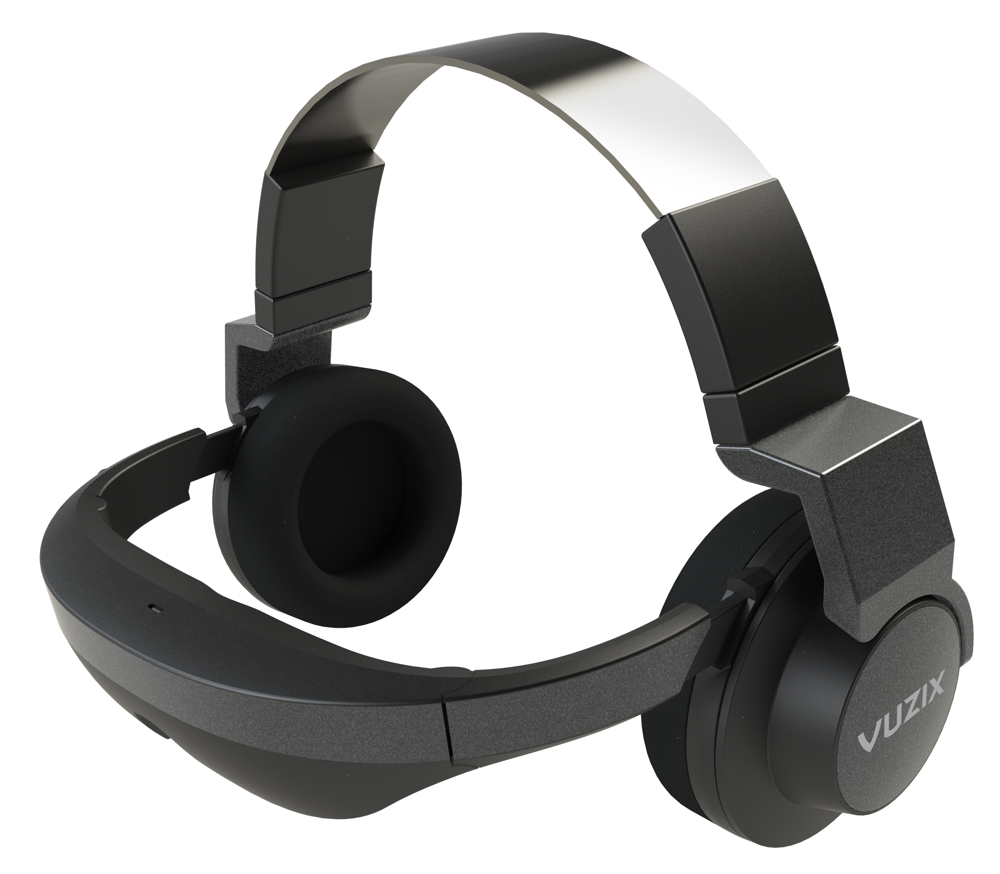

Specifications of Skullcandy S2RFDA-074 In-the-ear Headset (White)
Technical Details
HEADSET SOUND FEATURES
Headset Frequency Response 20 - 2000 Hz
Headset Impedance 16 Ohm
Headset Sensitivity 102 dB/mW (Power On)
GENERAL
Headset Design Canalphone
Brand Skullcandy
Wired/Wireless Wired
Type of Headset In the Ear
Model ID S2RFDA-074
Color White
Magnet Type Neodymium
DIMENSIONS
Weight 63 g
Other Dimensions Dimensions: 37.9 x 46.5 mm
Price: Rs. 4,590.00